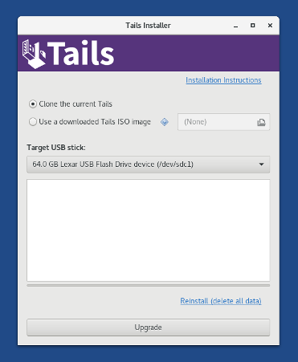
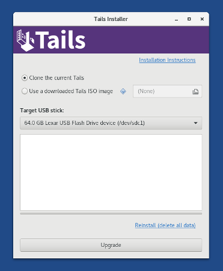
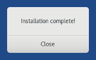

Install Tails
Upgrade your Tails
In this step, you will upgrade your Tails from the other intermediary Tails using Tails Installer.
Plug the new your Tails USB stick in the computer.
All the data on this USB stick will be lost.
Choose to start Tails Installer.
 

Choose the new your USB stick in the Target USB stick drop-down list.
To start the installation, click on the Install button. upgrade, click on the Upgrade button.
The Persistent Storage of your Tails USB stick will be preserved.
The Persistent Storage of the other Tails will not be copied.
Read the warning message in the confirmation dialog. Click Yes to confirm.
The installation upgrade takes a few minutes.
The progress bar usually freezes for some time while synchronizing data on disk.
After the installation finishes, close Tails Installer.

You are done upgrading Tails. You can now shutdown and restart on your Tails USB stick.
Thank you for staying safe!